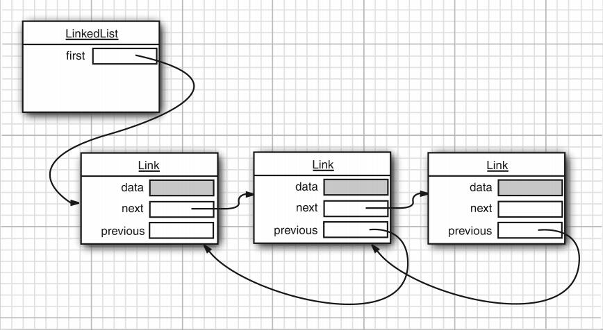
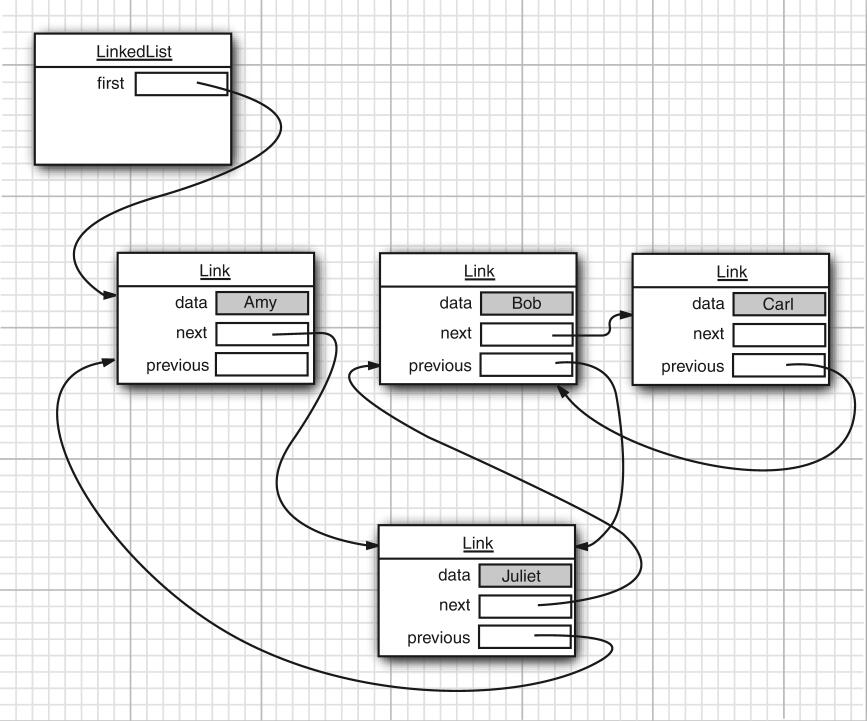

List 接口的链接列表实现。实现所有可选的列表操作，并且允许所有元素（包括 null）。除了实现 List 接口外，LinkedList 类还为在列表的开头及结尾 get、remove 和 insert 元素提供了统一的命名方法。这些操作允许将链接列表用作堆栈、队列或双端队列。
（Doubly-linked list implementation of the List and Deque interfaces. Implements all optional list operations, and permits all elements (including null).All of the operations perform as could be expected for a doubly-linked list. Operations that index into the list will traverse the list from the beginning or the end, whichever is closer to the specified index. ）
所有操作都是按照双重链接列表（doubly-linked list）的需要执行的。在列表中编索引的操作将从开头或结尾遍历列表（从靠近指定索引的一端）。
（All of the operations perform as could be expected for a doubly-linked list. Operations that index into the list will traverse the list from the beginning or the end, whichever is closer to the specified index. ）
LinkedList的优、缺点分析
优点：
- 操作的是数据指针，相对ArrayList大大增强了增、删速率
缺点：
- 查找速率较低
- 线程不安全
双向链表示意:

链表与泛型集合有一个重要区别:链表是一个有序集合,每个对象的位置很重要.
LinkedList.add方法是将元素添加到列表的最后,但是有时我们需要在列表中插入一个元素,这时这时使用迭代器就很必要.
图例:

相关代码:
|
|
注意:
这里有个调用remove方法的小细节——迭代器的删除和backspace工作方式有区别,在调用了next后,remove确实是删除了迭代后左侧的元素,但是在调用了previous之后,remove的是迭代后右侧的元素,并且不能连续调用两次remove.
add只依赖于迭代器的位置,而remove注重迭代器的状态.
|
|
基本实现
Node类的实现：
由于在链表中，出现了节点（Node）的概念，所以我们先写如一个节点类，来操控指针：
|
|
我们所实现的是双向链表，因此我定义了next和previous两个变量，顾名思义，目的就是为了对一个数据进行前后操作，后面定义了一系列getter/setter方法以达到增、删的操作；object变量显然就是储存的数据了
LinkedList类的实现：
|
|